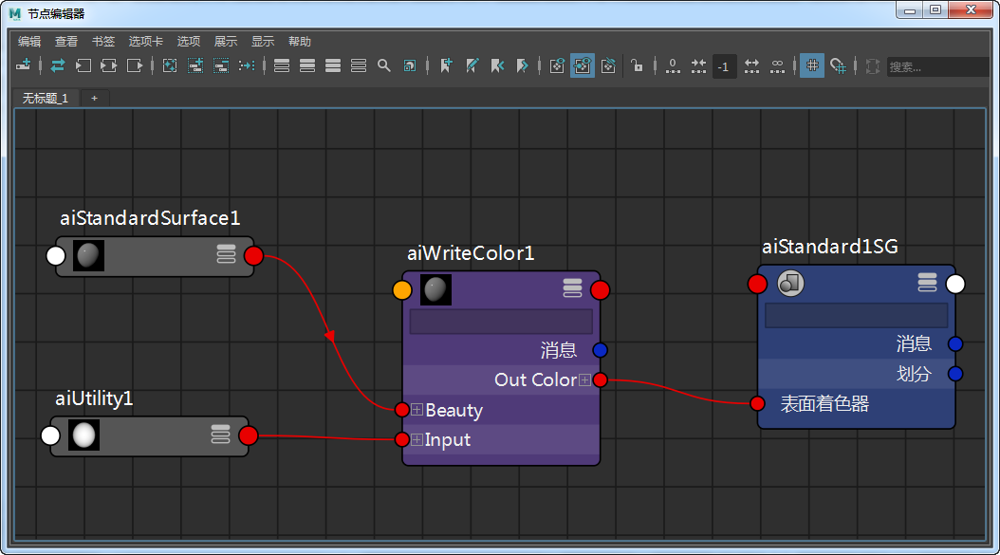
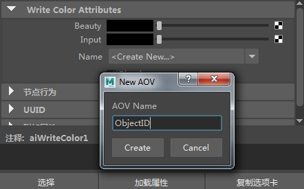
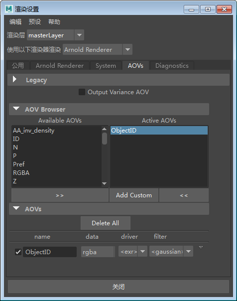
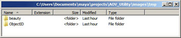
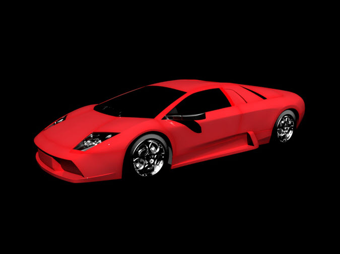
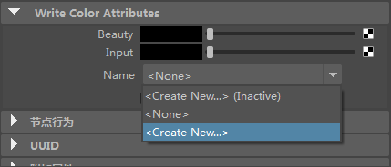
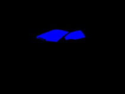

Ai 写入颜色
此简短教程介绍了如何使用 Ai 写入颜色*着色器将另一个着色器（例如，工具*着色器）的输出添加为自定义 AOV。
有关对应的 Maya 场景，请单击此处。
- 将一个 standard_surface 着色器指定给球体。
- 将输出 RGB 的着色器（例如另一个标准曲面着色器）连接到写入颜色的美景。
- 将写入颜色*着色器连接到 *standard_surface 着色器的“颜色”(Color)属性。
- 将工具着色器连接到写入颜色着色器的输入。配置工具着色器以输出所需值（如 object_id）：

最终着色器网络
- 在写入颜色的“名称”(Name)属性中，选择（或创建）要与工具着色器的输出（例如 object_id）相关联的自定义 AOV。


- 渲染场景。您应该注意到，在 images 文件夹中，MtoA 已写出与 object_id AOV 相关联的美景渲染以及工具着色器：

示例 1
假设您想要为汽车模型创建一些不同的蒙版。如果要将模型分割成不同的蒙版，则 Ai 写入颜色节点是一种很有用的方法。在此示例中，我们会将 Ai 写入颜色节点用于汽车涂料和挡风玻璃。

汽车美景渲染
- 通过上述球体所使用的方法，为汽车涂料和挡风玻璃创建 Ai 写入颜色节点。分别指定汽车涂料材质和挡风玻璃。
- 选择每个 Ai 写入颜色着色器，然后选择“名称”(Name)旁边的下拉菜单。为每个 Ai 写入颜色节点指定新名称，如“Car Paint”和“Glass”：

- 渲染场景。您应该会看到汽车美景已渲染，包括可用作单独蒙版的汽车涂料和挡风玻璃图像。
|
|
|
 |
| 汽车涂料工具渲染为单独的蒙版图像 |
挡风玻璃工具渲染为单独的蒙版 |